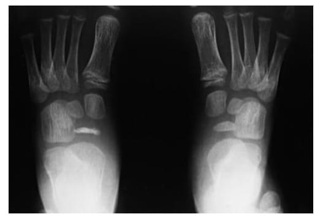

A osteocondrose mostrada na radiografia é a doença de quem?

Imagem da questão originalEscolha uma letra antes de arrastar.
O navicular do pé infantil fica achatado, denso e irregular. A resposta vem da anatomia, não da decoreba.
No Orto Questões, treine questões de provas anteriores por tema, prova e ano. Depois da resposta, leia o motivo da certa e das erradas.
Tela ilustrativa
Crie sua conta grátis e responda até 20 questões por dia. As próximas liberam no dia seguinte.
O site guarda suas respostas e organiza a revisão. Você vê onde erra mais, acompanha sua evolução e volta ao que precisa fixar.
O plano acrescenta Cronograma até a prova, Simulado Nacional e questões sem limite diário.